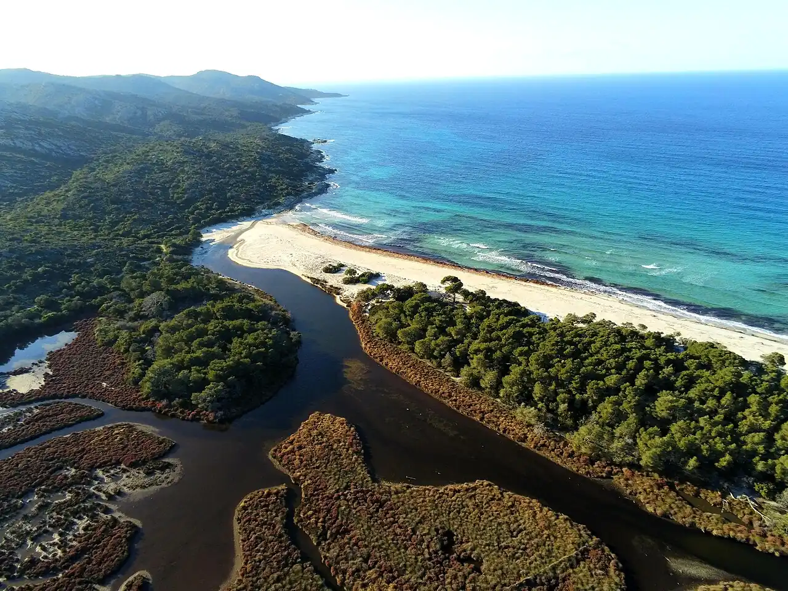

Plage de Saleccia
Désert des Agriates, Haute-Corse, France · baignade, snorkeling

Un kilomètre de sable blanc et d’eau turquoise au bout du désert des Agriates, loin de toute route goudronnée. L’eau est claire et peu profonde près du bord, avec des rochers à explorer au masque.
- Lieu
- Désert des Agriates, Haute-Corse, France
- Niveau
- Débutant
- Activités
- baignade, snorkeling
- Type d'eau
- Mer / océan
- Coordonnées
- 42.73, 9.21 (position approximative du secteur)
Dangers à connaître
- Accès long : piste très difficile ou marche en plein soleil.
- Pas d’ombre ni de service : prévois beaucoup d’eau.
- Nombreux bateaux au mouillage l’été.
Le conseil d'Ocean Buddy
Accès le plus simple : la navette maritime depuis Saint-Florent jusqu’à la plage du Lotu, puis environ une heure de sentier côtier.
Ouvrir dans Ocean Buddy Télécharger sur l'App Store
Source : Fiche Ocean Buddy · septembre 2026 · à vérifier localement.